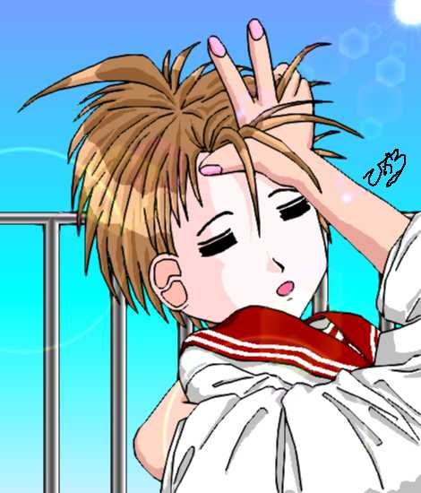

「天使のお仕事 第１３話 瑞樹は瑞樹（後編）」
喫茶店を出たところで、芹沢と瑞樹は別れた。
「笹島さん・・・じゃあ、またな。」
小走り気味に、その場から去っていく芹沢に、瑞樹は、想わず声をかけそうになってしまう。。
恥ずかしさがなくなったわけではないが、瑞樹の中では、まだ芹沢と同じ時間を過ごしていたいという想いがオキ火のように心を熱くしていた。
「あ、いたいた！」
不意に背後から聞き覚えのある声。
声のした方向へと視線を向ければ、そこには伊織の姿があった。
「あれ、伊織ちゃん、どうしたの？」
約束では確か「１人で商店街をまわってくる」だったはずだが・・・
「え・・・あ、帰りが遅かったから見に来ただけ。」
まさか、隠れて、瑞樹の様子を伺ってたなんでいえるわけもない。
「じゃあ、そろそろ帰ろうか。」
「え、いいの。まだ１周していないんだけど・・・」
「いいって、ここまでくれば、１周したのと同じ様なもんだから。」
伊織に引きずられるように家へと帰った瑞樹。
瑞樹の部屋に入ると、伊織は、彼女の髪から、髪留めを外した。
再び、世界が逆転した。
本来の瑞樹の意識が復活すると同時に、その意識が、今日これまで体験してきたことを、本を速読するように認識していく。
隠していたワンピースを着せられ、そして、あの銀色の髪留めを付けられ・・・
！
そうだ！
最近は、少女マンガはおろか、男性向け恋愛シミュレーションゲームの中でしかお目にかかれないようなあの体験。（瑞樹が何でそんなものを知っているかはおしてしるべし。）
ヤンキーに絡まれたところを、芹沢なんかに助けられる羽目になって・・・
「伊織、お前が、変なこと企むから、あたし、トンでもない目にあったんだぞ。」
「え、何があったんだ。」
そう応える伊織の本心は、瑞樹への心配と言うより、自分が見損なったらしい、その絶好の場面を惜しむ気持ちで一杯だった。
「何がって、伊織が余計なことするから、あたしはな・・・！」
危ういところで、瑞樹は自分が言わんとしていることに気づいた。
ショーウィンドウにみとれていたところまではまだいい。
しかし、ヤンキーに絡まれたことを言えば、そのまま芹沢との一件まで全て話さなければならなくなる。
自分が、ヤンキーに絡まれるくらいならともかく、それを芹沢に助けられ、しかも一緒に喫茶店まで入ってしまうなんて・・・
髪留めの効果もあるとはいえ、今日は、散々恥ずかしい自分を、伊織に見られているだけに、これ以上、伊織に、自分の弱みを知られたくはない。
「な、なに言ってんだ。あたしに、こんな格好させておいて・・・よし、今度は、伊織が、このワンピース着てみろ。もちろん髪留めを付けないでだ。」
「ば、ばか、なんで、おれがそんなこと・・・もし、胸がきつくてウェストダブダブなんてことになったら、お前、どーすんだよ。」
「あ、いったな！気にしてんのに！」
「あ、よ、よせ。」
言うが早いか、瑞樹は、伊織に飛びかかっていた。
「そんなこというのは、この口かこの口か。」
「ひょれが、ひゃるひゃったひゃら、ひゃめへひゅれ〜」
男だった時でさえかなわなかったのに、女の子になって体格も筋力も落ちている今では、勝てるはずもない。
伊織は、あっけなくねじ伏せられてしまう。
「こうなったら、スクール水着着せて、裸エプロンやって、眼鏡かけさせて、猫耳つけて、その写真、雑誌に投稿してやる！」
「頼むから、勘弁してくれ〜」
第１３話
「瑞樹は瑞樹（後編）」
原作 １００万Ｈｉｔ記念作品製作委員会
第１３話担当：
ことぶきひかる＆ＮＤＣセキュリティサービス
這うようにして、部屋から伊織が逃げ出していった後、瑞樹は、台風が過ぎ去ったかのような自分の部屋を見回した。
「ったく、伊織にオモチャにされるなんて、あたしもヤキがまわったな・・・」
自嘲気味の呟きをもらしながら、脱ぎ捨てたままになっているワンピースを拾い上げる。
「これ、今度こそ、見つからない場所にしまっとかないとな・・・」
そもそも、シードだかサードだかいうものによって、伊織が女の子になるなんてバカなことが起こらなければ、そもそも、このワンピースを着る機会などありえなかったわけだが・・・
「けど、この格好、芹沢のヤツに見られちまったんだよな・・・ま、アイツなら、こんなこと言いふらしたりするはずもないし、いいか・・・」
事の張本人の伊織は別にしても、知ってる人間に、こんな格好を見られるなんて・・・
せめてもの救いは、その相手が、芹沢だったことだろうか。
もっとも、助けてもらったとはいえ、芹沢と喫茶店に入ってしまうなんて・・・
これじゃ、まるでデートみたいなもんだ・・・といっても、瑞樹は、これまでデートみたいなことすら、したこともないのだが。
不意に、喫茶店で、不器用ながらも、必死に自分をフォローしようとしてくれている芹沢の姿が蘇ってくる。
（やっぱ、アイツいいヤツだよな・・・あたしみたいな女・・・女らしくない相手でも、一生懸命、女の子扱いしてくれるし・・・）
そう想うと、芹沢の姿やその振る舞いが鮮明に蘇ってくる。
あんな告白なんかされたせいで、ぎくしゃくした関係になってしまったけど、それまでは、自分が応援団所属ということもあって、そこそこ、気軽に言葉を交わせる間柄だった。
よりによって、自分なんかに告白するなんてことしなければ、あの関係でずっといられたのに・・・
もっと、他に、芹沢に相応しいお似合いの相手・・・可愛いなり、おしとやかなり・・・そんな女の子がいるだろうに・・・
ずきん
「え？」
不意に、胸・・・左側の肋骨が締めつけられるような感触に、瑞樹は、慌てて、胸を押さえた。
「なな、なんだ・・・今の・・・」
痛みは、数秒で収まったが、産まれたこのかた、怪我らしい怪我、病気らしい病気とは、男女関係並に無縁だった瑞樹にとって、この感触は、実際の痛み以上に驚きをもたらすものだった。
「え・・・この痛み・・・まさかな・・・」
マンガでは、よく、恋をすると相手を思うたびに、胸に痛みが走るなどとあるが、まさか、自分が、芹沢相手に恋心を抱いてしまうなんて・・・
そもそも、告白されたときに、すっぱりと断っているはずなのに、今更、芹沢に恋心が芽生えるなんて・・・
「あ！・・・そうだ、これって、あの髪留めのせいだよ・・・そうじゃなきゃ、あたしが、こんな乙女ちっくなことになるはずが・・・今日だって、アイツと喫茶店なんか入ったのも、髪留めのせいで・・・」
だが、今は、髪留めを付けていないことに気づく。
「ちょちょ、ちょっと待てよ。あたし、芹沢に・・・もしかして、ときめいちゃったりとかしてんのか？」
まさか、そんなことがあるなんて・・・少なくとも、芹沢を相手に、恋心みたいなものを自分が感じてしまうなんて、とても承認できるもんじゃない。
告白されたときも、はっきりといったはずだ。
自分より、もっと相応しくてお似合いの相手がいるはずだって・・・
それは、偽らざる自分の本心だったはずだ。
けれど、今更、なんで芹沢なんかに・・・
「落ち着け。これは髪留めのせいだ。あの髪留めで、あんなことになっちゃったもんだから、その余韻で、芹沢のこと、つい、いいかなあなんて想ったり・・・
って、おい、なんで、いいかなあなんて、言葉が出てくんだよ！
・・・そうだ！あれは、髪留めのせいで、ちょっと女の子っぽくなってるところで、あんな目にあったから、助けてくれた芹沢に、感謝ついでに、そん気分になっただけで・・・そうだ。そうに違いない。違いないったら！」
最後の言葉は、もう叫び声同然だった。
しかし、叫べば叫ぶほど、否定しようとすればするほど、心の中の芹沢の姿が鮮明なものとなる。
きゅん
不意に、そんな音が、耳鳴りのように、瑞樹の鼓膜を張り付かせた。
「な、なんだあ！今の音？！」
まさか、キャラクターデザインと声優の存在がなければ、製作会社を瞬殺してしまいかねないような男性向け恋愛シミュレーションゲームのような自分の反応に、瑞樹は動揺を隠しきれない。
「ま、まさか、あたし、アイツのこと・・・」
そう想っている間にも、胸になにかつかえたような・・・水を一気飲みした直後の息苦しさにも似た痛みがはしる。
（こ、これって、あの髪留めのせいなのか・・・それとも・・・）
肝心の髪留めは、既に伊織が回収した後であり、今となっては、今の自分のこの想いが、あの髪留めのせいなのか、すぐに確かめる術はない。
だが、だからといって、瑞樹の性格は、分からないまま、その状況を放置しておくくことができなかった。
例え、どんな結果がでようとも・・・それがどれだけ自分にとって不本意で嫌なものだったとしても、それを確かめ、決着をつけなければ、なにより自分が納得できない。
そして、今、自分の本当の想いを確かめる術は、ただ１つしかなかった。
（こうなったら、やらなくっちゃ・・・）
その結果、生じたそれが、どれだけ、自分の不利益に繋がろうとも・・・
どうやって、それを確かめるのか・・・頭の中で、段取りをまとめる。
その性格故に、一度方向が決まってしまえば決断の早い瑞樹のこと。
数分の間に、大まかな計画がまとまった。
しかし・・・不安はつきまとう・・・自分の本当の気持ちは、どこにあるのか？・・・そして、その結果を、本当に自分は受け入れることができるのか？
これまで、男の子と一緒にいる時間がなかったわけではないが、その相手を異性として認識してしまったことはなかったような気がする。
だからこそ不安が募る。
自分の心の奥底に鎮座するその感情が、どうにも制御できない・・・いや制御する以前に、その存在そのものを把握することができない。
自分のものであるにもかかわらず、持て余してしまうその感情に、瑞樹は、自分自身に、不安と苛立ちを覚えずにはいられないかった。
だからこそ、瑞樹は、それをしなければならなかった。

「伊織、ちょっとお願いがあるんだけど・・・」
土曜日・・・
授業も終わり、後は帰るだけとなった教室で、伊織に声をかけたのは瑞樹だった。
「な、なに？」
ちょっとビクつきながら、恐る恐る瑞樹へと振り返る伊織。
朝なら、宿題見せろで済むところだが、放課後の瑞樹のお願いというのは、かなり厄介なものが多い。
いつもは滅多に見せない猫なで声が、その不信感と疑心を増大させる。
「そう怖がるなよ。とって喰うわけじゃないからさ。」
いっそ、喰って欲しいと想えるようなことを散々しておいて、その言葉もないだろうが、今日の瑞樹には、いつもの、
声をかけられる隙があるお前が悪いんだよ〜ん。諦めて、ゆーこと聞きなさい。
と言わんばかりの、人の悪い表情が伺えない。
むしろ、そこには、普段滅多に見せない・・・伊織だけに限らず誰にでも・・・相手の顔色を伺うような、下手に出ている素振りが感じ取れる。
伊織は、瑞樹の視線が、自分の頭へと向けられていることに気づいた。
（え、瑞樹の目的ってこの髪留め・・・のはずないよな・・・この前、あんなことあったばかりなのに・・・）
しかし、瑞樹の次の言葉は、伊織の想像を見事に裏切るものだった。
「その髪留め、貸してもらえないかなあ・・・その、半日、いや２，３時間でいいんだけど・・・」
「これを？」
髪留めを外しながら、伊織は応える。
伊織にとっては、この髪留めは、自然に女の子として振る舞うために不可欠なものだし、パラレルとの連絡にも使っている大切なものだ。
この前は、悪ふざけで瑞樹につけてみたとはいえ、やはり、貸してといわれて貸せるものではない。
しかし、そこで、伊織は、瑞樹の眼差しに気づいた。
これまで、一応お願い実質強要の瑞樹の言葉は幾度となく聞いている。
しかし、これほどに、下手に出て、少なくとも対等の位置に立って、お願いしてくる瑞樹を見るのは初めてだった。
（・・・この前の一件に関係することかな・・・）
髪留めを外しながら、伊織は応える。
「けど、何に使うんだ？この髪留めの効果、この前、体験したばかりだろ。」
あの後、あれだけ文句を言われただけに、今更、この髪留めを借りたがる瑞樹の気持ちがよく分からない。
「ゴメン。今は、話せない。けど、決して変なことには使わないと約束する。だから・・・」
いつになく、神妙な瑞樹の態度。
その仕草に、伊織は、彼女が何か大切なこと・・・もしかすると、この後の人生を左右するかもしれないことに、これから向かおうとしていることを、感じ取った。
「・・・ん、分かった。じゃあ、後で、家に返しにきてくれよ・・・」
「さんきゅ！恩に着るよ。このお返しは必ずするからさ。」
髪留めを受け取った瑞樹は、脱兎のごとく、教室から飛び出していった。
瑞樹を見送った伊織は、急いで校門へと向かい、シリアルの姿を探した。
「あ、シリアル、ここにいたのか。」
校門の脇に立つ木の上に、シリアルの姿を見つける伊織。
「どうしたんだ。伊織？」
「今、瑞樹が飛び出していったろ？どっちにいったか分かるよな。」
「・・・分かるけど・・・今度は、何をやる気なんだ？」
訝しむシリアルに、伊織は先ほどのことを、ざっと説明する。
「瑞樹に髪留め？お前、性懲りもなく、またそんなことしてんのか？」
「ちゃんと、話を聞いてくれよ。今回は、瑞樹の方から、貸してくれっていってきたんだ。」
「瑞樹の方から？それはまたおかしなことだな。この前、おしゃれして髪留め付けたせいで、遅蒔きながら女の子に目覚めたかな？」
シリアルにしてみれば、皮肉兼ギャグのつもりだったが、その言葉は、実はあながち外れたものでもなかった。
「もしかして、そうかもしれないけど、瑞樹が、俺に頭を下げるなんて、滅多にないことなんだ。頼むよ。これは、俺がちゃんと見届けないとダメなことのような気がするんだ。」
そう呟く伊織の表情もまた、真摯なものだった。
「・・・分かった・・・伊織が、そこまでいうなら、協力するさ。ま、パラレルの名案とかよりは、ずっとマシなはずだからな。」
瑞樹をシリアルがつけ、その後を伊織が追う。
猫の姿であるシリアルなら、瑞樹に気づかれる恐れも低いし、屋根や塀の上など、行動範囲が拡がる分、この前にように見失う可能性も少なくなる。
（あれ・・・）
間もなく、伊織は、瑞樹が向かっている先に、例の商店街があることに気づいた。
（もしかして・・・素だと恥ずかしくて買えないような服でもあったのかな・・・）
例の場面をみていない伊織は、当然、瑞樹が何を考えているかの想像も、ピンぼけのものとなる。
瑞樹が向かったその先・・・それは、伊織が知るはずもなかったが、初めて髪留めを付けた瑞樹が、ヤンキーに連れ込まれ、そして芹沢に助けられたあの路地だった。
約束の時間より３０分も早く、瑞樹は、その場所へとたどり着いた。
芹沢の性格からすれば、時間ぎりぎりにくることはまずありえない。
後１０分もすれば、この場所に姿を見せるだろう。
もちろん、来てくれればの話だが。
芹沢の下駄箱にいれたレポート用紙。
それには、この場所と時刻に来て欲しいという一文、そして自分の名前しか書いていない。
しかも、自分は、一度、芹沢を振った相手なのだ。
もし来てくれなかったとしても、文句をいえる筋合いではない。
もちろん、そうなったとしても、瑞樹は、芹沢を恨む気にはなれなかった。
いや、恨むどころか、昨日、（髪留めをつけていたことがあるとはいえ）助けてもらったことを考えれば、こっちがお礼をしなければならないぐらいなのに。
瑞樹は、右手をそっと開いた。
そこには、伊織から借りてきた銀色の髪留め・・・
あの日のことが、脳裏に蘇ってくる。
路地裏、そして喫茶店で感じた芹沢への想い。
髪留めの力のためだと想いたかったが、それを外して１時間以上経った後も、芹沢への想いは、自分の中からは完全に消えてはいなかった。
しかし、髪留めを付けていた状態からの延長線上に、その想いがあったことが、瑞樹の心を揺るがさせていた。
自分は、本当に芹沢のことを・・・
正真正銘、芹沢のことが好きならばそれはそれでいい。
髪留めを外した後、その想いが、消えてしまうなら、それはそれで仕方ないことだ。
だが、今の自分は、まだ、その決着がついてはいない。
そして、この想いをはっきりさせるには、もう一度、あの髪留めを付けて、芹沢に会うしかないのだ。
もう一度、髪留めをつけて芹沢とあった時、自分はどのような想いを抱くのだろうか・・・
そしてその後に・・・
約束の時間まで、後２０分。
あと１０分ほどで芹沢が姿を見せる頃だろう。
髪留めをもちなおし、あの時と同じように、左のこめかみ、やや上方に、髪留めをスライドさせるようにして、はめこむ。
前髪の生え際が、軽く引っ張られる感触の後、神の動きにあわせて意識が引きずられるような感触。
それは、髪留めを付け終わった後にも、止まらなかった。
そして、三度目、世界は逆転した。
あの女の子が走っていた。
片手で帽子が飛ばないようにと抑えながら、スカートの裾を翻しつつ。
その光景に、不意に、もう１人の人物が加わった。
それは、１人の男の子だった。
年齢は、この女の子より２，３歳上・・・７，８歳というところか。
首まわりがちょっと伸びかけたＴシャツに半ズボン。
ほっぺたに、指、肘、そして膝小僧と、張られまくった絆創膏は、まるで、腕白坊主ガキ大将のモデルルームだ。
女の子が走る先には、その男の子の姿がある。
彼女が向かう先は、やはり、その男の子なのだろうか。
女の子が息を切らし始めた頃、その吐息に気づいたのか、男の子の視線が、女の子へと向けられる。
そして・・・
逆転した世界が元に戻り、意識は現実に引き戻される。
（あ・・・あたし・・・）
瑞樹の意識は、あの時と同様、おとなしく控えめな・・・気弱といってもいい少女のものへと変貌を遂げていた。
だが、意識が変わったとはいえ、それまでの自分の記憶、自分の行動は、全て覚えている。
自分・・・瑞樹という少女が、これなら何をしようとしているのか、そのために、何をしたのか。
それは、意識せずとも、脳裏に浮かび上がってくる。
確認したその途端、自分がこれから何をしようとしているのか、それに気づき、瑞樹の心の中に動揺が広がる。
同じ自分が考えお膳立てしたこととはいえ、こんな恥ずかしいことを、自分がやらなければならないなんて・・・
（あ、あたし・・・こんなことできるの？・・・）
本来の自分なら多分できそうなそれが、今の自分には、とてつもない重責に想えてくる。
（あ、あたしのばか・・・なんで、こんなことやろうなんて想ったの・・・それをしなくちゃならないのは、あたしなのに・・・）
そのコンプレックス故の内向的な性格か、内向的な性格故のコンプレックスか、とにかく、今の瑞樹は、自分という存在に対する劣等感から、思い切った行動をとれなくなっている。
（芹沢君・・・こないで・・・）
もし、芹沢がきてくれなければ、これから自分がやろうとしていたそれをやらずに済む。
こんなこと、自分には絶対できないに決まっている・・・だから・・・
この前助けてくれたのも、所詮、たまたま通りかかっただけにすぎないし、今日だって、あんな文面では、きてくれない可能性の方が大きい。
（もういいよね・・・芹沢君・・・くるはずないから・・・）
一方的な自己完結で、そう決断し、路地裏から出ようとしたその時、瑞樹の視界に、影が伸びてきた。
（あ）
目を凝らすまでもない。
そこには、芹沢の姿があった。
「どうしたんだよ。笹島さん。こんなとこに呼び出すなんて・・・」
「ごめんなさい・・・芹沢くん・・・」
自分ではない自分がやったこととはいえ、やはり自分がやったことには変わりがないという想いから、素直に謝ってしまう瑞樹。
芹沢は、呼び出されたことよりも、いつもとは、まるで違う・・・そう、この前、路地裏に連れ込まれた時の同じような瑞樹の素振りと雰囲気に、面食らっているかのようだった。
実際、芹沢自身、この前のあの出来事は、実は他人のそら似だったか、白昼夢ではないかと、未だに疑っているところがあった。
だが、今、彼の目の前にいるには、確かに、彼の見慣れている笹島瑞樹だった。
いつも見ている学校の制服に、ポニーテールの髪型・・・
その姿は、紛れもなく、よく知っている瑞樹の姿だった。
この前のように、髪を下ろし、ワンピースという出で立ちではないだけに、見間違えようもない。
にも関わらず、今、目の前に確かに存在している瑞樹が、まるで別人のように想えるのは何故だろうか？
どこが違うと問いかけられると、返答に窮してしまうが、確かに、そこに立っている少女が、瑞樹だとは想えない。
姿形は確かに瑞樹・・・だからこそ、瑞樹とは想えない何かを感じずにはいられない。
「で・・・さ・・・用事ってなんなんだい？こんなところに呼び出してきて・・・そういえば、ここ、この前のあの場所のはずだけど・・・」
普段用事があれば、校内で平気で呼びかけてくる瑞樹を知っているだけに、芹沢が不思議がることも当然といえた。
用事は確かにある・・・
だが、それを口にすることはできなかった。
今に瑞樹には、その用事を済ませるために、やらなければならないことがあるのだ。
しかし、なかなか、それをすることができない。
この前、自分が頬を寄せた胸、自分を優しく抱擁してしてくれた腕、じっと見ているだけで愛おしさがこみ上げてくる。
今こうしている間にも、その腕の中に飛び込みたいという衝動がこみあげてくる。
そして、それを、芹沢が拒むことはおそらくないだろう。
芹沢を見つめていると、心が熱くなる。
胸が、ぎゅっと締めつけられるような気がする。
瑞樹は、自分が芹沢に恋をしている・・・少なくとも、この髪留めを付けている自分は、間違いなく、好意を越えた感情を、芹沢に対して抱いていることを認めざるを得なかった。
（あ、あたし、やっぱり芹沢君のこと・・・）
自分が、芹沢のことを好きになっていることが、改めて実感となって、心・・・いや身体全てに染みいっていく。
（芹沢・・・くん・・・そうだ・・・外さないと・・・この髪留め・・・）
そう、今回の目的は、芹沢の前で、この髪留めを外すことだったのだ。
彼の目の前で、髪留めを外した後、芹沢へのこの想いが、まだ残っているのか・・・
それを確かめずにはいられなかったのだ。
今、髪留めを付けている以上、この芹沢への想いもまた髪留めのせいなのかもしれない・・・
だからこそ、今、この場で、髪留めを外さなければならない。
自分の本当の気持ちを確かめるために！
だが、髪留めを外し、本来の自分に戻ってしまったら、芹沢へのこの想い、この熱く燃えさかるような感情もまた消えてしまうのではないか。
髪留めに手を伸ばしかけたところで、そんな不安と恐怖が、わき上がってくる。
（いや、この気持ちがなくなってしまうなんて・・・）
瑞樹の心の中に、どうしようもない喪失感、そしてそれに対する不安が浮かび上がってくる。
例え、それが髪留めの力によるものだったとしても、狂わんばかりに愛おしいこの想いこの気持ちを失いたくない。
そんな感情が、瑞樹の手を肩より上に伸ばさせることを許そうとしない。
（だめだよ・・・いくら、芹沢君のこと好きだとしても、それがこの髪留めの力のせいだったら・・・）
それを確かめるために、自分はここに来たのだ。
ここで、芹沢と顔をあわせたのだ。
髪留めをつけているとはいえ、今の瑞樹は、おとなしく素直で控えめで優しくて・・・けど、決して勇気や決断力に欠けるただ弱く儚いだけの存在ではない。
芹沢のことが好きだからこそ、あえて、髪留めを外し、自分の本当の気持ちを確かめなければならなかった。
芹沢のことを好きだからこそ、造られた、偽りの気持ちでいるわけにはいかない。
髪留めの力により、いつもより、遙かにその気の強さは失われているとはいえ、瑞樹本来の・・・強い意志だけは、確かにそこに存在していた。
必死ともいってよい決意を胸に、髪留めへと手を伸ばした。
髪留めの固く、そして少し冷たい感触。
その感触が、一度は固まったはずの瑞樹の決意を揺るがそうとする。
だめ！
揺るぎそうになる自分の心に渇を入れる。
自分はそう決めたんだ。
髪留めを外した結果、芹沢へのこの想いが消えてしまってもかまわない。
それはそれで、偽らざる自分の本当の気持ちなのだから。
例え、それはどれだけ自分にとって辛いものだとしても・・・
髪の毛ごと引き抜いてしまわんばかりにむしり取るようにして、瑞樹は、髪留めを外す。
その瞬間、瑞樹の中で、世界が逆転した。
髪留めを外した瞬間、脳裏に浮かび上がったのはやはりあの女の子の姿だった。
暗闇に浮かんでいるのは、あの女の子。
麦わら帽子にワンピース。
そして、彼女の前には、あの腕白坊主な男の子の姿があった。
少年の前に立つ女の子は、まるで、なにかを待ちわびているかのように、そわそわした素振りを見せている。
「あ、なんだ。お前か・・・スカートなんてはいてるから分からなかったよ。」
どこか突き放すような少年の声。
「けど、なんで、何、女みたいな格好してんだ？」
少年の言葉に、走り出す女の子の姿。
しかし、今度は走っていく向きが違う。
それは、明らかに男の子から遠ざかっていく方向。
不意に、声が聞こえた。
女の子の声・・・
しかし、それが音にならない心の声であることが、瑞樹には何故かわかった。
もうやだ。こんな格好、二度としない。
吐き捨てるような女の子の声・・・
なぜか、その声が聞こえてくる。
あたし、女の子の格好なんてしない。
女の子になんて見られなくていい。
どうせ、可愛い格好なんて似合わない。
女の子らしい服なんて似合わない。
少女の声にならない叫びは続いた。
その叫びが、他人事のようには想えない。
どこかで聞いたその声。
いつか聞いたその叫び。
「あたしは、女の子らしくなくていい！」
女の子の声と自分の声が、重なった。
声が重なった瞬間、瑞樹の脳裏に閃くものがあった。
（あの女の子、男の子・・・そうか、そうだったんだ！）
そして、瑞樹は、全てに気づいた。
世界の逆転は終了し、瑞樹は、本来の自分の意識に立ち戻った。
それまで、心を覆っていた恐怖とか不安とかいう感情が、強烈なライトに照らし出された闇のように小さくなっていく。
先ほどまでの、弱々しい自分は一体何だったのか。
言いたいことも言えず、自分のやりたいことにさえ、恐怖ばかりが先行して、何もできなくなってしまう。
おとなしいとか控えめとかいえば聞こえはいいが、ようは自分が傷つきたくないがために、失敗を恐れ、解決を先送りしてしまう・・・そんな弱さ・・・本来の瑞樹には微塵もないはずの・・・そんな感情が、強風に吹かれた煙のように吹き消されていく。
だが、消えなかった。
ただ１つ、芹沢への想い。
先ほどまでの自分から引き継がれた・・・しかし、それとは微妙に異なる、しかし、紛れもない芹沢へのこの想い。
そして、瑞樹は、気づいた。
この想いは、髪留めの力によるものではなかったのだ。
それは、単なるきっかけに過ぎなかった。
自分本来の個性・・・性格の特徴・・・
快活さ、自由奔放・・・そういった・・・強いて言うなら、真夏の太陽の下、咲き誇る大輪の向日葵の花。
その陰に隠れてしまった、根本でひっそりと蕾を開く名も知らぬ小さな花に、自分自身でも気づかなかった。しかし確かに存在していた、その想い。
自分は、自分の心の中に隠れてきたその想いを見つけただけなのだと。
そして、自分のその気持ちに気づいた瑞樹には、もう迷いはなかった。
自分は、芹沢を・・・
「今更言えた義理じゃないかもしれないけど、芹沢、まだ、あたしのこと・・・」
その言葉を口にすることは、流石に瑞樹でも、憚られると言うか、躊躇してしまうところがあった。
芹沢が相手であるかどうか以前に、やはり異性相手に、その言葉を口にすることに、少なからぬ勇気が必要であることを、今気づく。
あの時、芹沢は、その勇気を・・・異性に、自分の想いを伝えるという・・・人生を左右すると言っても良い勇気を振り絞ってくれた。
自分は、その時、その勇気の意味も価値も気づかなかったのだが、今度は、自分が勇気を振り絞る番だった。
大きく息を吸い込んで、瑞樹は口を開いた。
「・・・あたしのこと・・・好きか？」
とうとう言ってしまった。
髪留めを外しているにも関わらず、自分の顔が熱いくらいに火照ることを感じる。
覚悟は決めていたはずなのに、この言葉を、口にすることが、これほど、自分の羞恥心を刺激するものだとは想わなかった。
好きとか嫌いとかいう以前に、そういう意識をもつ対象として捉えていなかった芹沢を好きになった事自体、自分自身、驚きを抑えきれないところがあったとはいえ、人を好きになると言うことを、はっきりと表現することが、こんなにも恥ずかしいとは・・・
それは、あのワンピース姿さえ凌駕している。
 |
→ |
|
 | ||
| ← |
一方、芹沢は、いきなりの瑞樹の告白に、ただ唖然とするばかりだった。
この前、あんな振られかたをしたこともあって、いきなり、瑞樹から、そのような問いかけをうけるとは想っても見ないことだった。
むしろ待ち望んでいたと言ってもよい瑞樹の問いかけだったにも関わらず、芹沢はなかなか答えを返すことができない。
瑞樹にからかわれていると想えるほど、今の芹沢に余裕はなかったが、それでも、前回、あのような返事をくらったことによるトラウマが、彼の決断の少なからぬ影響を及ぼしているのは確かだった。
５秒・・・１０秒・・・そして２０秒・・・
口すら開こうとしない芹沢に、瑞樹が、失望を覚えようとしたその時、ようやく芹沢の唇が動いた。
「好きだよ・・・」
瑞樹に負けないくらい顔を赤くしながら、芹沢は応える。
あの時に告白に比べれば、あまりにも短い・・・ただ息を１つ吐くだけにすぎない程度の短いその言葉・・・声・・・空気の震え・・・
にも関わらず、その言葉が鼓膜を刺激した瞬間、心が、嵐の夜の窓ガラスのように震えるのは何故だろう。
瑞樹は、自分の中が・・・心の中も身体の中も・・・自分の全てが、まるで、程良い加減のお風呂に浸かり、じっくりと暖まっていくかのように、幸せに満たされいくことを感じた。
こんな想いになったのは、何年ぶり・・・いや初めてのことかも知れない。
無意識のうちに、重ねられた手が胸にあてられた。
掌から伝わってくる鼓動が、いつもより早くそして強く脈打っていることが感じ取れる。
自分自身、こんな可愛らしい女の子そのものな素振りが無意識のうちにできたとは想ってもみなかった。
今まで、自分が、心の中で、否定しようとしていた自分の女の子の部分が、不意に急浮上してくる。
浮かび上がった女の子としての想いが、心の水面を占拠する。
「・・・断っとくけど、ついさっきまでのあたしとこの前のあたし、あれは、本当のあたしとは違うんだぞ。多分・・・だから、あんなあたしを期待しているようなら、失望することになるけど、それでもいいのか？後悔しないのか？」
そう応えながら、瑞樹は、髪留めを付けていた自分が、決して、本当の自分ではないと言い切れないことも感じていた。
あれは、ウソの自分・・・造られた自分ということではない。
そう・・・あれは、確かに自分・・・今まで気づかなかった自分の中の一部・・・無意識のうちに気づくことを恐れ封印してしまっていた自分の想いの一部・・・
だからこそ、芹沢へのこの想いが、髪留めのせいなのか、それとも自分本来のものなのか気づけなかったのだ。
しかし、今は迷うことなく言える。
自分は、芹沢のことが、確かに好きなのだと・・・
瑞樹の問いかけに、芹沢は、一瞬の躊躇いもみせずに、力強く頷いた。
その仕草に、瑞樹は、自分の心が、より強く震えることを覚える。
自分が芹沢を好きで、芹沢が自分を好きで・・・ただそれだけのことに、こんなにも気持ちが、揺さぶられるものなのか。
まるで、嵐の海に浮かぶ小舟か、はたまたロデオでムスタングに必死に掴まるカウボーイか。
ともすれば、その揺さぶられる勢いを借りて、飛びだしてしまいそうな自分の想い・・・
自分でも納得できないそのことなのに、それでも、深い充実感を覚えずにはいられない。
心の震えは、いつのまにか、身体をも振るわせていた。
まるで、タチの悪い風邪を引いたときのように、震えが止まらない。
だが、今は、風邪の時のような悪寒は何もない。
悪寒と言うにはあまりにも無理がある、心地よさが、心と体を埋め尽くしている。
そして、そのことが瑞樹に、もう一度、芹沢にあのことをやって欲しいという想いを抱かせることになった。
「なあ・・・悪いんだけど・・・もう一度、あたしに、告白してくれないか・・・今度こそ・・・何度も言わせて悪いんだけど、次は、必ずお前の想い受けとめてみせるから・・・」
自分でもちょっとずうずうしいかなと想えるこのセリフ。
だが、もう一度、芹沢に、口にして欲しかった。
自分でも気づいたばかりの女の子の心が、そう求めている。
そう呼びかけている。
誰だって、好きな人の、その言葉を正面から聞いたみたいのだ。
「ちょちょ、ちょっと待ってくれるか。」
芹沢の意外な返答に、瑞樹は、自分の表情に失望を隠しきることができなかった。
（やっぱり・・・）
自分の非があると分かってはいても、やはり、その言葉を聞くのは辛かった。
しかし、やむをえないことだ・・・最初に、自分と芹沢の関係が、そこまで発展することを拒んだのは紛れもなく自分の方なのだから。
「そ、そうじゃないんだ・・・」
瑞樹の表情から、その中の失望に気づき、慌てて、芹沢は言葉を継ぐ。
「そ、そのさ・・・今度、告白してまた笹島さんに断られちまったら、俺、もう立ち直れないよ。だからさ、ちょっと待ってくれ・・・笹島さんが断るどころか、感動して抱きついてくれるような、そんな名ゼリフ、考えてくるからさ。それまで待ってくれよ。」
芹沢の返答に、瑞樹の表情から失望が吹き消され、瞬時に歓喜で満ちあふれた。
「・・・いいよ。待ってる・・・芹沢が、その言葉をいってくれるのを・・・けど、急いでくれよ。乙女の青春時代は、激レアなんだぞ。」
そう応えながら瑞樹は握った拳で、芹沢の頬を軽く小突く。
その感触を心地よさそうに笑みを浮かべる芹沢。
抱擁は必要なかった。
少なくとも、今の２人には。
そして、笹島と瑞樹は、共に、自分の想いが相手に伝わったことを確信した。
「うまく、いったみたいだな。」
「そうみたいだけど、かなり結果オーライじゃないか、これ。下手したら、瑞樹さんはともかく、芹沢は、一生消えないトラウマ負うことになるとこだったぞ。お前、本当は、男のはずなんだから、もう少し、気を使ってやれよ。」
路地裏から少し離れた角で、伊織とシリアルは、自分たちの気配を隠すことも忘れて、瑞樹と芹沢の様子を固唾をのんで見つめていた。
「結果オーライなら、それはそれでいいんじゃない。」
この前、見そびれた面白い光景を、今回、どうにか、帳消しにできたとあって、伊織は満足そうだ。
「・・・お前、パラレルに似てきてないか・・・」
「！」
シリアルが思った以上に、その言葉は、伊織に衝撃を与えたらしい。
伊織は、頭を抱え込んだまま、その場にうずくまってしまった。
「やれやれ・・・けど、自己嫌悪に陥れられるようならまだ救いはあるか・・・」
パラレルが、２人になっては、もうたまったもんじゃないといわんばかりに呟くシリアル。
とはいえ、伊織の受けたダメージは、相当大きかったらしく、なかなか立ち上がれそうにない。
「覗きなんて趣味が悪いぞ。伊織。」
ちょっと怒ったような・・・というかへそを曲げたような声に、伊織は、ハッと振り返った。
いつのまに来たのか、
両手を腰に当てて瑞樹が、伊織のことを見下ろしていた。
「あれ、気づいてたの？」
足元では、シリアルがいわんこっちゃないと言わんばかりに、伊織のことを見上げていた。
「これを外した時からな。」
瑞樹の手の中で、銀色の輝きが踊る。
「返すよ。ほら。」
瑞樹が投げてよこした髪留めを、伊織は慌てて受け止めた
「あたしには、もう必要ないもんだからね。」
そう言い残すと、瑞樹は、足早に去っていった。
スカートを翻すように歩いていくその姿は、一服の涼風を想わせるものがあった。
髪留めによって、瑞樹が気づいたもの。
それは、芹沢への想いだけではなかった。
そう、それは、自分でさえ忘れていた幼い頃の出来事。
自ら封印してしまっていた記憶。
幼いとき、子供心とはいえ憧れを抱いていた近所の年上の男の子。
最初は、年上の・・・頼もしい遊び仲間にすぎなかったはずの、その男の子・・・彼に、子供心とはいえ、彼に、友達以上の好意を感じたのは、いつだっただろう・・・
彼は、腕白坊主ではあったが、決して乱暴者ではなかった。
弱い者イジメをする者には、常に断固たる態度をとっていた、
そんな彼に守ってもらえる存在・・・同世代の女の子達の姿に羨望を覚えたのは、どうしてだろう。
それは、子供故の、無い物ねだりだったのかもしれない。
しかし、自分は、それでもかまわなかった。
買って貰ったきり、一度も袖を通していなかったワンピースに身を包み、驚く母親に髪を梳かして貰い、万全の体勢で挑んだ、憧れの少年へのアプローチ。
可愛いといって貰いたかった。
他の子がされていたように頭を撫でて貰いたかった。
だが、待っていたのは、非情ともいえる、酷な返答・・・
それは、おそらく、子供の無邪気さ故に、相手を思いやる以前の、自分に素直すぎるがための、率直な応えだったのだろうが、それが哀しい出来事であったことは変わらない。
そして、自分のこの男の子みたいな性格、それは変わり様がないだろう。
だが、間違いなく言える。
自分は、それだけではなくなったのだと。
自分の本当の想い・・・
それは、辛く哀しかった過去の記憶と一緒に封印してしまっていた自分の想いの一部・・・
心のどこかで、無意識のうちに傷つくことを恐れ、それ故に、押し込めてしまっていた男の子への想い憧れ・・・そして、自分自身の中に紛れもなくあった女の子の魂・・・
だが、今なら、躊躇い戸惑いながらも、それを認めることができる。
人を好きになることができる。
そして、なにより、今の自分には、迷うことなくその名を呼べる、大切な人がいるのだ。
「パラレルのやることにしては、珍しく役にたつものになったな。」
瑞樹の後ろ姿を見送りながら、伊織は、髪留めを、いつも通りに、左耳のすぐ上にはめる。
「あら、イオちゃん。連絡がつかないから、心配したんですのよ。」
心配とか不安とか懸念とかいう単語とは、無関係な口調が頭の中に鳴り響く。
「あ、パラレル・・・ちょっと、髪留め外してたから・・・」
「そうでしたの。あまり、長く付けていて、本当に女の子になってしまっても困りますから、気を付けてくださいね。」
「けど、髪留めが、瑞樹に、あんな効果をみせるなんて想わなかったな。お陰で、芹沢君と瑞樹もくっつきそうだから、これで、幸せの数値も、ちょっと上がったかなあ・・・にしても、瑞樹、普段、あんなに男の子みたいとはいえ、髪留め、付けた途端、あんなに女の子になっちゃうなんて、今でも、ピンとこないよ。」
ちょっと呆れ気味に呟く伊織。
「それは、そうですわ〜ぁ。この髪留め・・・正確にいいますと、髪留めの力の本来の目的は、好きな人に告白する勇気が欲しい女の子のためのものなのですから。」
「・・・ちょっと待って。男の子の意識を女の子に換える髪留めが、なんで、女の子に、必要になるの？」
パラレルの説明に、伊織の表情に怪訝なものが浮かぶ。
「話せば長くなることなのですけど、この髪留めの本来の役割は、付けた方にとっての理想的な女の子像を演じるための魔法をかけるとでもいうべきことですの。
元の使い方は、髪留めではなくて、その方に直接魔法をかけるわけなのですけど、今回のイオちゃんの場合、そうすると、男の子の意識が完全になくなってしまうものですから、外している間は効力がなくなるようなアイテムとして髪留めの形をとってみたわけですのよ。」
「理想の女の子・・・じゃあ、あたしの場合、こういう性格の女の子が、あたし・・・って言い方は、ちょっと変だけど、自分にとっての理想の女の子なわけなの？」
「イオちゃんが、納得できないのは無理もありませんわあ。これは、あくまでも、潜在意識下の理想、この場合、アニマ・・・男性の理想とする女性像とでもいうべきものですから、普通、本人は自覚しておりませんわ。
今回は、明るくて優しくて、世話好きだけど、控えめで、ちょっとドジだけど、ガンバリ屋で・・・そんな女の子が、伊織君にとっての理想な女の子ということですわね。」
男性にとってはいざしらず、女の子の意識からしてみると、かなり男のエゴとでもいうべき、理想の女の子像だ。
潜在下のことだけに、気づいていなかったとはいえ、自分が、結構、男のエゴを振り回していたと想うと、なんとなく居たたまれなくなってしまう。
「けど・・・女の子が、自分にとっての理想的な性格になれるための魔法って、何の役に立つの？」
「それは、もちろん、好きな人に告白するためですわ。」
伊織の質問に対し、自信たっぷりに、即答するパラレル。
「自分の理想とする性格になれることで、女の子は、自分に自信をもてたり、性格や反応が変わったことで、それまで自分の想いに素直になれないところから、一歩踏み出すことができるようになるんですのよ。すなわち、それまで自分に対するコンプレックスから、ほんのちょっと勇気と決断が足りなくて、できなかったこと・・・つまり告白とか・・・それができるようになるんですのよ。」
なるほど・・・
髪留めの効果もあって、今の伊織には、そのことが痛いほど分かった。
女の子に限らず、大半の人間は、多かれ少なかれ、自分に劣等感を抱いており、そのことが、ネガティブ思考となって、肝心な時肝心な場所で、思い切った行動をとれなくさせてしまう。
伊織が、男の子だったとき、真織に、具体的なアプローチができなかったのもそのためだ。
だが、劣等感の鏡面意識とでも言うべき自分の理想像、その能力を得ることができれば、それをバネにすることで、多少なりとも、大胆な行動に出ることができるようになれるはずだ。
「けど、瑞樹の理想像の女の子が、あんな内気な女の子だったなんて、信じられない。いつもの瑞樹は、その正反対の位置にいるのに。」
「あら、女の子というのは、大抵、自分にはないものに憧れるものですのよ。多分、瑞樹さんも、普段はそういう素振りこそ見せませんでしたけど、それなりに、そういう女の子に憧れていたのではないかと想いますけど。」
瑞樹が、その内面では、おとなしい・・・まるで深窓の令嬢のような女の子に憧れていた。
あまりにも長いつきあいのため、あの姿をみた後でも、なかなか納得できることではないが、髪留めの力によって、多少女の子としての思考パターンになっているせいか、なんとなく分かるような気がした。
まあ、普段があんな性格な瑞樹のことだ。
自分が、あんな内向的な女の子に憧れているなんて、まず気づかないだろうし、気づいても、素直に認めるとは想えない。
今回、髪留めを付けることがなければ、死ぬまで気づかない・・・ということはなくても、もうしばらくの間、瑞樹は、自分の中にある本当の自分の想い、それに気づくことはなかっただろう。
「元をただせば、愛の天使の使う弓矢の力の応用版とでもいうべきものなのですけど・・・この前、使ったのは・・・もちろん、その時は髪留めではありませんでしたけど・・・確か、そのお相手は、お嬢様だったかお姫様だったか・・・数百年ほど前のことだったはずですわ・・・え〜と、あの方のお名前は・・・」
「あ、いい！言わなくていい！」
伊織は、慌てて、パラレルの言葉を遮った。
なにしろ、パラレルのやることなすこと、大半が最悪の結果を招くことは、身をもってしっている。
もし、この時の結果が、世界史に残るような戦争やら内乱やらに関わっているなんてことを知った日には、夜も眠れなくなってしまう。
「あら、残念ですわ。結構と有名人のはずなんですけども・・・」
パラレルの返答に、伊織は胸をなで下ろした。
悪い予感は的中していたようだ。
聞かなくて良かった・・・
「そうそう忘れるところでしたわ。吉報ですわよ。」
吉報という言葉に、伊織とシリアルの眉目に皺が寄る。
彼女が、この手の言葉を使った結果が、ロクなものであったためしがない。
「・・・その、吉報って？・・・」
勢い、応える伊織の声もテンションが低下する。
もっとも、そんなことにビクともするようなパラレルではなかった。
「先ほど、幸せグラフが急上昇したんですの。この様子なら、イオちゃんが、元の姿に戻ることも不可能ではありませんわ。」
テンションが下がっていたこともあってか、伊織は、パラレルの説明の意味にすぐには気づけなかった。
「あら、イオちゃん、嬉しくないんですの。元の姿に戻れるんですのよ。私も苦労した甲斐がありましたわ。」
元の姿に・・・という言葉に、ようやく、伊織は、パラレルの言っている意味に気づいた。
「え、元の姿って、男の子に戻れるってこと？」
「まあ、イオちゃんの本当の姿が、男の子なら、そういうことになりますわね。」
男の子じゃなかったら俺は何なんだ。とツッコミをいれたくなるような返答だったが、その言葉は、伊織が２番目に待っていた言葉といっても良かった。
「男の子に戻れる・・・ちょっと待って。それってウソじゃないよね？」
「大丈夫ですわよ。天使がウソをつくことだけは、絶対にあり得ませんから。」
確かに、パラレルが伊織にウソをいったことはない。
もっとも、彼女の場合、その独善的にして思慮深慮に欠ける性格と、それに直結した無謀という名の行動力によって、その発言が結果的にウソ同様となってしまうことが、非常に多いのだが。
「け、けど、なにが、あったの？ここ数日は、あたし、何もしていないはずだけど。」
確かに、瑞樹と芹沢がくっつくために、少々の労力を費やすことになったものの、それをいえば、この前の美砂と月島の一件の方が、よほど手間がかかっている。ついでにいえば、よっぽど恥ずかしい目と酷い目にもあっている。
今回自分がしたことといえば、せいぜい、伊織に、ワンピースを着させたことと髪留めをつけたこと、そしてそれを覗きにいったことくらいだ。
「そのことなんですけど、今回、イオちゃんがされたことが、本来、シードと融合した瑞樹さんが行うべき行為と条件、これに一致したらしいのですわ。」
今回行ったこと？
自分は、これといったことは何もしていないはずだが・・・
「つまり、今回、シードの第一の目的とは、笹島さんが芹沢君と結ばれること、そして、その影響によって、周囲の人間が幸せになることだったらしいのですわ。」
「え？！」
伊織が驚いたのも無理はない。
自分に取り憑いたシード本来の役目とは、そんなことだったのか？
直接目的が瑞樹と芹沢をくっつけることなんて、地ビール並にかなり地域限定すぎる幸せにすぎない。
「ここからは推測と予測にすぎませんけど、芹沢君と瑞樹さん、このお二人は、生涯の伴侶になるかもしれない・・・そして、その過程と家庭から、より多くの幸せ・・・決して大きくはないでしょうけど、日々、その小さな幸せを実感として亀締めることができるような・・・そんな幸せが、まわりに広がっていく・・・そういうことになるようなのですわ。」
「そ、そんなものなの・・・」
ここに至るまでの苦労が身に染みている分、伊織としてはなかなか納得できるわけではない。
「人の幸せは、大きく分けて、２つのものがありますわ。
１つは、どうしても、他人の不幸の上にしかなりたたないもの・・・
例えば、この世に１つしかない何かを２人以上の人が欲しがれば、どうしても、手に入れられる人は１人だけ・・・つまり、誰かが幸せになるためには、別の誰かが不幸になってしまうことは避けられないことになってしまいます。
そして、もう１つは、ある人がの幸せになることで、その周囲の人達も幸せにしてくれるというもの・・・
例えば、それは、新しい命の誕生・・・本人にとってそれが祝福であることは当然であり、その両親や祖父母、それに親戚の方々、近所の人達・・・多くの人が、そのことを喜び幸せに浸ることができます。
そして、シードの存在意義とは、このこと・・・できうる限り、不幸になる方がいない・・・そして、多くの方々が、幸せになれる状況を創り出すことなのです。
今回の芹沢君と瑞樹さんのことは、まさに、後者・・・お二人が幸せになれることで、その周囲の人間も幸せになれることなのですわ。」
パラレルの言葉に、伊織は、ちょっと考え込んだ。
確かに、芹沢と瑞樹・・・この２人が恋人・・・とまでいかなくても、親しい異性友達から、もう１歩踏み込んだ間柄になったとしたら。
例えば、サッカー部における芹沢の行動・・・がむしゃらを通り越して、どこか刺々しいとも言える、攻撃的な行動は、一度、瑞樹に、必死の想いの告白を素っ気なくあしらわれてしまったことが、少なからずトラウマとして影響していることは間違いない。
だが、今回瑞樹との関係修復とさらなる発展は、それまで、どこか張りつめていたところのある彼の心に、なにか、ゆとりとか揺らぎをもたらしてくれることになるだろう。
そして、それは、それまで芹沢の暴走に、引いてしまっていた部員達にも、プラスとなるものだろう。
何事にしても、指導者牽引者にとって不可欠なものは、少々強引すぎるくらいの行動力と、ただそれだけでは終わらない、周囲の者を思いやるゆとり。
これまで、前者ばかりだった芹沢に、それだけではない、仲間のことを考え、時には、歩調を緩め、追いつくことを待ってやる・・・それができるようになったとしたら・・・もしかしたら・・・彼の在学中は不可能だとしても、彼の夢である日本一になるための布石・・・基礎固めくらいは、できるかもしれない。
芹沢にとって、それは、無意味なことではないだろう。
そして瑞樹・・・
あの性格の瑞樹だけに、彼女を異性として好きになる物好きな男子は、芹沢くらいしかいないだろうから（もっとも、あのワンピース姿をみたとしたら、その限りではないが）、２人が、恋人と呼べる間柄になったとしても、悲しむ男子はまずいないだろう。
瑞樹のことを、「お姉さま」とか「宝塚」という風に憧れている女子の中には、悲しむ者もいるかもしれないが・・・
そして、芹沢という存在が、彼女を、多少は女の子らしくしてくれることには、期待したいところだった。
そうなれば、この後、自分が、瑞樹にオモチャにされることは、多少減ってくれるかも知れない。
「イオちゃんが、今回、されたことによって、ようやく、シードの直接の目的が、達成されたことになったわけですのよ。
もちろん、今回の件だけで全てというわけでもなく、これまで、本来、瑞樹さんがやるべきことだったことを、イオちゃんが代行する過程で、手順や段取りに変更が生じた分の補正として、イオちゃんがしてきたことを、色々と、考慮した分もあったとは想いますわ。」
「けど、そ、それじゃ、あたしは、とにかく、瑞樹と芹沢君を、さっさとくっつけちゃえば、良かったってこと？」
ここまで、パラレルの、愚にも付かない作戦に振り回されてきた苦渋の日々が、蘇ってくる。
あの悪戦苦闘は一体なんだったんだろう。
「ええ、ですけど、イオちゃんのしてきたことは、無駄というわけではありませんのよ。
最終的には、芹沢君と瑞樹さんが結ばれることが大前提とはなるでしょうけれど、瑞樹さんとイオちゃんは、全然、別の人間ですから、瑞樹さんによって、もたらされる幸せと、イオちゃんによって、もたらされる幸せとでは、その内容が異なって当たり前ですわ。
特に、今回は、瑞樹さんが、直接、シードの影響によって芹沢君と結ばれるのと、イオちゃんの手ほどきで結ばれるのとでは、その過程も大きく変わる分、その影響で、幸せになれる方も、幸せの内容も、かなり変わってくるはずですし。
むしろ、イオちゃなりに努力した結果は、瑞樹さんとは異なった意味で、多くの人を幸せにしてくれたことは間違いありませんわ。
例えば、サッカー部の方々は、イオちゃんが、マネージャーになってくれたお陰で、かなり幸せになれましたわ。
これは、瑞樹さんでは、おそらくあり得ない話でしたし。
それに、月島君と美砂さん、あのお二人も、イオちゃんががんばったから、あのような間柄になれたことも考えれば。
ですから、イオちゃんのしてきたことは無駄どころか、見方によっては、瑞樹さんより、多くの方を幸せにできたのかもしれませんわよ。」
パラレルの気の抜けたフォローを、左耳から右耳へと通り抜けさせながら、伊織の心の中で、怒りが沸々と、火にかけた油のようにわき上がってくる。
ここまでパラレルの愚にもつかない名案とやらのせいで、散々酷い目にあってきたことを思い返すと、今回やったこと程度で、元に戻る目処がたったなどとは、どうにか、男の子に戻れそうと言うことへの喜びより、自分がしてきた苦労は一体なんだったんだという怒りの方が、強いものとなる。
「それじゃあ、最初に、、瑞樹に、髪留めつけて芹沢君の前に連れていけば、事態は一挙に解決の方向に向かったという事じゃない・・・」
「う〜ん、そうとも言えますわね。」
パラレルのあまりにも無責任な返答に、既に沸騰点へと達しかけていた伊織の怒りは、瞬時に沸騰点を超越し、理性のヤカンの蓋を吹き飛ばした。
元に戻るためとはいえ、泥まみれ汗くさい練習着を洗濯し、チアガールとしてミニスカをはかされ、うそつきのクＯガキに振り回され、水着で海水浴にまで行かされた、あの苦労と恥ずかしさは一体なんだったのか？
確かに、自分がしてきたことによって、幸せになれた人達が紛れもなく存在する以上、それらを無駄な努力という一言で済ませるには問題があるにしろ、下手をすれば・・・すなわち、自分がちょっとした気紛れで、瑞樹に髪留めをつけるなんてことをしなければ、それは、芹沢と瑞樹がくっつく機会そのものを失うことになる・・・つまり、シード本来の目的が達成できなくなることになり、それは、つまり、自分が元に戻れる可能性が限りなく０に等しいことを意味している。
もし、あの朝、瑞樹が、自分の声をかけてこなかったら・・・
「なんだよ。そりゃあ！」
瞬間的に膨れ上がった感情の爆発は、髪留めの制御を吹っ飛ばし、男言葉がそのまま叫び声となる伊織。
「そ〜んなことが、大前提だったなら、なんで、ここまで、そのことが分からなかったんだよ！下手をすれば・・・瑞樹と芹沢をくっつけそこなったら、俺は、男に戻れなくなるところだったんだぞ。」
「だって、本来は、瑞樹さんと融合することを目的としたシードなんですもの。イオちゃんと融合した時点で、予測外の変化が起こってしまいましたから、もうそこから、どのような変更が生じたなんて、推測のしようがありませんもの。
それに、先ほど説明いたしましたけど、芹沢君と瑞樹さんが、ただ単に結ばれることだけでは、イオちゃんは、元に戻れないですのよ。
事後報告という形になりましたけど、結局、芹沢君と瑞樹さんの関係を進展させる他にも、イオちゃんが、やることは決まっていたようなものですわ。」
「だからって、もう少し、なんとかできなかったのか？
俺が、どれだけ苦労して恥ずかしい想いして・・・」
「いいじゃありませんか。女の子になったお陰で、真織さんとも仲良くなれたわけですし。」
「う」
そのことを言われると、伊織も言い返す言葉がない。
少なからぬ日時、真織と寝食を共にし、肉体接触も幾度となく起こり、美味しい想いも、１度や２度ではきかない。
「とにかく、イオちゃんも元に戻れそうですし、笹島さんも芹沢君とくっついて、その他の方々も幸せになれたのですから、万事結果オーライですわ。」
パラレルの結果オーライという言葉に、先ほどのシリアルの言葉が蘇ってきて、伊織は、再び頭を抱えて屈み込んだ。
かなり本末転倒とはいえ、男の子に戻れる兆しが見えたことは、伊織の思考ベクトルを、一挙にポジティブ側へと押しやったことは紛れもない事実だった。
だが、男の子に戻るということは、伊織に別の仮題を押しつけることになった。
今の生活・・・真織の家への下宿状態のことだ。
元に・・・男に戻ってしまえば、当然、真織と一緒に住むわけにもいかなくなる。
もちろん、女の子のままでは、真織と結ばれることもできないから、いずれ男の子に戻る必要はあるわけだが、にしても、これまでの苦労を考えれば、同じ屋根の下に暮らしているというこの状況を、もう少し活用いなければ、収支決算は赤字になってしまう。
真織と仲良くなったといっても、それはあくまでも女の子としての伊織。
当然、男に戻ってしまえば、これまでの様な接し方などしたら、立派なセクハラだ。
しかし、情けないことに・・・と言うか、ここまで、伊織は真織に対して、自分が男の戻った後の段取りをほとんどたてることができないままでいた。
というか、真織の伊織に対する接し方があまりにも大胆すぎて、逆にこちらから攻勢に出る隙が見いだせなかったというのが実状だ。
だが、男に戻ってしまえば、これまでのような接し方はできようはずもない。
男に戻る前に、ある程度、真織の好みの男の子像を把握し、また同時に、男の伊織が、それなりにスムーズかつ自然に、真織と親しくなれるよう・・・そう、あくまでも最初は親しくでいい。無理に、いきなり恋人な関係にしようとして、逆に全てを台無しにするようなヘマだけはしてはならない・・・そんな段取りを組み上げておく必要があった。
というか、それをしなければ、出来なければ、自分は、掛け値無しのヘタレ野郎のモテナイ君だ。
パラレルの大ボケを責める権利など毛頭すらない。
「う〜ん、やっぱ最初はグループ交際だよな。」
日曜日の午後、自分の部屋で、伊織は、現在、パラレルが変身している本来の自分・・・男伊織と真織の関係を、どうやって構築し、そして発展させるか、そのことに思案をひねっていた。
「芹沢に瑞樹、後、月島に美砂ちゃん・・パラレルの化けた俺が加わるにしても、男が１人足りないなあ・・・ちょっとマズい気もするけど・・・藤本を引き込むしかないか・・・俺が藤本を引っ張っていって・・・パラレルの伊織と真織ちゃんを２人っきりにするとか・・・」
残念なことに、男伊織と真織の直接の接点は、現在のところ全く存在しない。
まずは、みんなで、遊びに行こうということで、真織と男伊織が、一緒に行動する時間と場所を用意する。
これで、まず真織と男伊織は、知らない間柄ではなくなるわけだ。
こうなれば、自分が、男に戻った後、真織に話しかけたり、誘ったりすることもしやすくなる。
（まずは、友達・・・仲のいい、同世代の異性の友達でいいんだ・・・焦らない焦らない・・・）
できれば恋人がいい。真織のことを彼女と呼べるようになりたいと馳せる気持ちを抑えながら、伊織は思案をまとめていた。
「ねえ、伊織ちゃん、ちょっといい？」
不意に、真織の声が、伊織の思案を遮った。
「え・・・あ、いいよ。入って。」
慌てて、髪留めを付けながら、応える伊織。
今だ、髪留め無しで、真織と話すのは、かなり辛い。
正直、事前に、髪留めなしで、話すぞ。と決意を決め、何をどう話すか、こう言われたらどう返すか、入念にシミュレートした上でないと、まともな会話などできない。
なにしろ、真織は、あくまでも、伊織のことを幼なじみの女の子として捉えているだけに、平気で、無防備な姿を見せたり、身体を密着させてくる。
髪留めを付けている最中はともかく、外した後に、逆流してくるそれらの光景は、幾度となく、伊織の血圧をあげてくれていた。
「じゃあ、お邪魔しま〜す。」
半開きにしたドアの向こうから、頭半分だけ出して、部屋の様子を伺った後、真織は、部屋の中に脚を踏み入れる。
「ごめん。なにかしてた？」
伊織の返答に、間があったことを気にしてか、少し申し訳なさそうな表情を浮かべる真織。
「う、ううん、ちょっと考え事してただけだから・・・あ、座って座って。」
伊織は、大急ぎで、クッションを床に並べる。
自分の分と真織の分、ちょっと距離を置いて。
迂闊にベッドに座ると、ずりずりと真織が近づいてきてしまい、髪留めを付けていない状態では、自分の方が話を聞くどことではなくなってしまうし、髪留めを付けてたら付けたらで、その場は良くても、外した後、蘇ってくる記憶と光景は、鼻血が出るほど鮮烈なものとなってしまう。
さて、座ったはいいが、いつもと雰囲気が違う。
普段なら、率先して自分から話し始める真織が、今日はなかなか口を開こうとしない。
その様子に、流石に伊織も、今日の真織が、いつもと違う・・・なにか、真織が大切なことを話したがっている・・・大切なことだからなかなか話し出せない出ることに気づく。
「ねえ・・・真織ちゃん、もしかして、あたしに、なにか話したいこと、あるんじゃないかな？」
思い切って、その言葉を口にしてみる。
案の定というべきか、真織の表情に小さな驚きが浮かんだ。
「あの・・・伊織ちゃんに、ちょっと相談したいことがあるの・・・」
はにかむような表情をみせながら真織は応えた。
「え、相談？」
これまでは、どちらかといえば、伊織の世話を焼くことに情熱を傾けてきた真織だけに、伊織に悩みがないか聞いてくることはあっても、逆に伊織に対して、相談を持ちかけてくることはほとんどなかった。
少なくとも、こういう風に、正面から相談を持ちかけるという形では。
「相談？あたしなんかでいいの？
あたしなんかより、真織ちゃんの方が、ずっと頭もいいし・・・」
正直な話、今の伊織には、真織の相談事に対し、ただ聞いてあげるだけならともかく、解決できる自信は全くない。
「あの・・・あたしが相談したいのって・・・そういうこととちょっと違って・・・」
相変わらず歯切れの悪い真織の声。
それが、かえって、伊織の好奇心を刺激した。
「で、相談って何なの？」
真織のために何かしたいという純粋な想い半分、彼女の悩みがどんなものか知りたいという野次馬根性半分で、伊織は身を乗り出していた。
「その・・・伊織ちゃん、芹沢君とか・・・男の子とも、けっこう仲いいよね。」
厳密には、真織が想っているような、異性の友達とでも言うべき関係ではなく、あくまでも、伊織本来の同性としての親近感なのだが、無論、真織にそれを話すわけにもいかない。
「そ、そうだね。けど、そんなに仲がいいってわけじゃないけど・・・部活とかの都合で、仕方なくみたいなもんだし・・・」
「でも、あたしなんかより、ずっと、男の子のこととかよく知ってるじゃない。部活以外でも、みんなと話してるし。」
「そ、そうかな・・・」
真織が、そう思い込んでいる以上、伊織としても、否定するわけにも行かない。
男の子と仲がいいという言葉に、女（？）の勘が、なにかイヤな予感を捉える。
とはいえ、ここまできて相談内容を聞かないでは、後味も悪ければ、寝覚めも悪い。
男に戻った後、真織との接点を極力増やすためにも、この手の悩みは知っておくべきだろう。
「ねえ、話すだけ話してみて・・・解決策はなくても、ちょっとしたアドバイスぐらいならできるかもしれないし・・・だから、あたしに相談、もちかけたんでしょ。」
かなり、デバガメが先行しはじめてはいるが、やはり、真織に対して少しでも力になりたいという想いもあり、伊織は、ぐっと詰め寄った。
「あの・・・笑ったりしない？」
「笑ったりって・・・あたしが、真織ちゃんにそんなことするわけないでしょ。」
「・・・誰にもいっちゃだめだよ・・・」
「うん、約束する。なんなら指切りしてもいいけど・・・」
「うん・・・じゃあ・・・」
伊織に、そこまでいわれたことで、かえって踏ん切りがついたのだろう。
指切りげんまんの後、恐る恐る口を開いた真織に、伊織も、想わずぐっと息を呑む。
「あのね・・・あの・・・あたし、好きな男の子がいるの・・・」
（へえ、真織ちゃん、好きな人いるんだ・・・どんな人だろ・・・）
髪留め効果で、女の子のロジックに引き込まれかけていた伊織は、そのまま、真織の好きな相手がどんな男の子が、その想像へと移行しかけてしまう。
（真織ちゃん、寂しがり屋だし、少しくらい強引な方がいいよね・・・けど、世話好きなところもあるから、ずぼら・・・豪快なくらいの男の子がお似合いかな・・・おい、好きな男の子って！）
ようやく、伊織は、真織の爆弾発言に気づいた。
真織に好きな人がいると言うことは、すなわち、自分・・・進藤伊織の失恋を意味することに他ならない。
（そ、そんなあ・・・真織ちゃんに好きな男がいるなんて・・・）
例の一件の後、真織に、男の噂が何もなかっただけに油断していたと言えば油断したといえるが、いきなりこんなことを相談されるとは。
「あ、ご、ごめん！あたし、ちょっと用事思い出しちゃった。ま、また後で。」
「あ、伊織ちゃん。」
引き留めるような真織の声に後ろ髪引かれる想い・・・なんて余裕すらあるわけもなく、目的地すら定まらぬまま、伊織は、外へと飛び出し、そのまま駆け続けた。
「ふう・・・」
公園のベンチに、伊織は、腰をおろしていた。
ちょうど、熱い最中ということもあり、公園は人もまばら・・・というか、ほとんどいない。
せいぜい、木陰の辺りを、ゆっくりと通り過ぎるだけだ。
掌の上の銀色の髪留めをじっと見つめる。
この髪留めをつけたままなら、真織の相談をそのまま聞くことができたかも知れない。
だが、髪留めを付けたままでも、完全に消えることはなかった男としての意識が、それを拒絶した。
自分が好きな女の子に、好きな男がいるなんて・・・
例え、今の自分が、女の子であるとしても、聞きたい言葉ではなかった。
（けど、いきなり飛び出しちゃったのはまずかったよなあ・・・相談の途中だったのに・・・）
悪い予感を覚えたところで、引き返すべきだった。
そう想ってはみても、もはや後の祭りだ。
（ここにいつまでもいるわけにはいかないし・・・一度、帰らないとなあ・・・ちょっと帰りづらいけど、髪留めを付けてればなんとかなるかな・・・）
不幸中の幸いと言うべきか、髪留めを付けている最中は、意識が女の子になっている分、多少お気楽極楽になってくれる。
「しょうがない・・・帰ろうか・・・」
そう呟きながら、髪留めを付けた瞬間、いきなり、話しかけてくる声があった。
「あ、イオちゃん、今日は髪留めをつけていてくれたみたいですわね。」
「パラレル・・・一体、どうしたっての。」
心の中でそう応える伊織の声は、勢い不機嫌なものとなる。
「あら、今日はご機嫌斜めのようですわね。」
もちろん、パラレルが、そんなことを、意に介するはずもない。
「・・・それはいいから、何の用事なの？」
「それが、非常にお伝えしにくいことなのですが・・・」
珍しく、言葉を濁すようなパラレルの声。
「いいから、いってよ！もう！パラレルらしくないじゃない！」
心の中でそう応える言葉も、ついつい語気の荒いものとなってしまう。
もっとも、今の伊織は、先ほどの一件で、かなり自棄になっていた。
毒を喰らわば皿まで。
こうなったら、日本が沈没しようが、木星が消失しようが、知ったこっちゃない。
今、恐怖の大王が降りてきてくれるのなら、のぼりをたてて歓迎することだろう。
「イオちゃんが、そう言って下さるのなら、お話ししますけど・・・」
「もう、こっちは、待ってるんだから、早くしてよね。」
向こう側から、気圧されるような気配が伝わってくる。
「えーと・・・では、お話ししますけど・・・このままでいくと、どうもイオちゃんは男の子に戻れないみたいなんですの。」
真織の告白で、魂が半分抜けた状態に陥っていた伊織は、パラレルの説明の意味を、しばらく理解できなかった。
「元に戻れないの・・・そう・・・元に戻れないのね。そんなことなら・・・って、おい！元に戻れないって、あたし、男の子にもどれないってこと？！」
先ほどの真織の告白に負けず劣らず、パラレルのその報告は、伊織を仰天させる。
「ちょちょ、ちょっと待って。この前、どうにか、男の子に戻れそうっていったじゃない。あれって、ウソだったの？！」
「だから、天使はウソをつくことはありえませんのよ。実際、シードの達成率は、９割を越えていましたから。」
「９割って、それなら、元に戻れても当然なくらいじゃない。なのになんで？」
「それについては、ちょっと長くなりそうなんですけど・・・」
「短く説明して！
短く！」
「あの・・・つまり、シードの達成状況に置ける比率の中に、女の子としてのイオちゃん・・・早川伊織という人物が存在し続けるということが、相当数含まれてしまっているらしいんですの・・・」
「女の子の伊織が存在・・・し続けるって・・・それと、元に戻れないって事にどういう関係が？」
「つまり、伊織という女の子の存在が、直接にしろ間接にしろ、周囲の人達を幸せにする・・・そういう状況が、ほぼできあがってしまっているわけですわ。ですから、早川伊織が進藤伊織に戻ってしまい、早川伊織という女の子が消えてしまうことは、周囲の人達にとって、非常にマイナスであると・・・
逆に言えば、伊織という女の子がいなくなってしまうと、まわりの人達が幸せになれる可能性が、極端に減ってしまう。あるいは、今現在の幸せがなくなってしまう可能性が極端に大きくなってしまう。そういうことになりますわ。だから、シードとしては、イオちゃんを男の子に戻すわけにはいかなくなってしまたらしいですの。」
未だ、真織の爆弾発言の痛手から回復していない伊織にとって、その衝撃は、あまりにも強烈すぎた。
それどころか、弱り目に祟り目、泣きっ面に蜂である。
「そ、そんなあ・・・あたしが、男の子に戻れる方法ってもうないの？」
もはや、伊織の声は、すっかり涙声だ。
「高校を卒業すれば、進学するにしろ就職するにしろ、進む道は分かれるわけですから、そうなれば、伊織という女の子はそれほど必要なくなりますから、元に戻れるかもしれませんけど・・・」
「ちょ、ちょっとまって、高校卒業って、かなり先のことじゃない。それまで、あたし、元に戻れないの？」
「仕方ないですわ。今、イオちゃんが、男の子に戻ってしまっては、折角、幸せになったみなさんが、また不幸せに戻ってしまう可能性が大きくなってしまいますし・・・」
「そ、それって・・・ようは、人柱みたいなもんじゃ・・・」
「あら、それはちょっと人聞きが悪いですわ。別にイオちゃんが死んでしまったり、いなくなってしまうわけではありませんから。ただちょっと姿や存在意義が変わるだけで。」
「それが一番問題なの！」
このまま、元に戻れなくなっては、これまでの苦労は一体何だったのか？
「とにかく、あたしは、できるだけ早く男の子に戻りたいんだってば！なにか、いい方法はないの？」
「そうですわねえ・・・女の子の伊織ではなく、男の子の伊織という存在の方が、より多くの幸せを周囲の人間に与えられることになれば、シードは、イオちゃんを男の子に戻してくれると想うんですけど。」
そうか！
男としての伊織が、頑張れば・・・
と、ちょっと待て。
男の子の伊織の存在意義を高めるには、男の伊織が、なにかをしなければならない。
ところが、今、厳密な意味での男の伊織は、この世界にいないのだ。
明らかに、完全な密室殺人を解くかのような矛盾点に伊織は気づいた。
「ちょっと待った。今のあたしが、どうやって、男としての伊織の存在意義を変えられるわけ？」
「あら、そういえばそうですわね・・・それでは、ここは１つ、あたしが、伊織くんになって、一肌脱ぐことに・・・」
「や、やめてえ！」
これまでのパラレルと発想と素行を散々みたあげく酷い目にあってきているだけに、伊織の叫びは、泣き声に近かった。
ここで、余計なことをされては、男としての伊織のポイントを稼ぐどころか、その利息返済のために、一生、女の子として過ごさなければならなくなってしまう。
「あら、遠慮することはありませんわ。これも、私の役目の１つですから。」
パラレルの答えに、伊織のこめかみに青筋が浮かび上がる。
その言葉と、実績の伴わない責任感で、どれだけの人間を不幸のズンドコにたたき落としてきたのだろう。それも、真綿で首を絞めるかのようにソフトタッチで。
「と、とにかく、パラレルはあんまり余計なことしないで・・・あたしが・・・あたしが自分でなんとか男の子に戻れる手段がないか考えるから、パラレルは手を出さないで、これまで通りにしていて。」
「イオちゃんが、そこまでおっしゃるのなら、そういたしますけど・・・困ったことがあったら、いつでも相談して下さいね。」
「う、うん、その時はこっちから相談するから。」
無論、今の伊織には、パラレルに頼るような気は毛頭ない。
これまで、パラレルの名案とヤラが、役に立った試しは、１度もないのだ。
ここで、変なことをされては、在学中どころか、一生、男に戻れない可能性すら出てくる。
夕刻を迎えようとしている河原に、伊織はいた。
家・・・
下宿先にはなんとなく帰りづらい。
何気なく蹴った小石が、水面に波紋をつくる。
（なんか、家出少年みたいだな・・・あ、今は家出少女か・・・）
自分のやっていることに、想わず苦笑してしまう伊織。
（おれの人生ってなんだったんだろう・・・
女の子にされちゃって、元に戻るためにがんばったあげく、結局元には戻れない。惚れた女の子には、好きな男の子がいるっていうし・・・しかも、その恋の手ほどきを相談されるなんてなあ・・・）
「チクショー！神も仏もあるもんか！」
「天使はいるけどな。」
予期せぬツッコミに、振り向いた先には、黒猫・・・シリアルの姿があった。
「しりある〜」
世にも情けない顔と口調で、シリアルを睨み付ける伊織。
「悪い。ちゃかすつもりはなかったんだけどな・・・」
申し訳なさそうな表情をみせるシリアル。
「話は聞いたよ。元には戻れない。お目当ての彼女には好きな男がいるらしい。確かに、神も仏もないよな。こりゃ。」
「いや、シリアルは悪くはないよ・・・八つ当たりしてごめんな・・・」
いつもは辛辣なシリアルに、こうも下手にでられると、かえって伊織の方が申し訳ない気になってしまう。
「そう、しおらしくしても仕方ないよ。伊織が怒る気も分かるしさ・・・」
確かに、シリアルに、どうこういっても仕方ないことは、伊織にも分かっていた。
しかし、今は、感情が理屈より優先してしまうことは、どうにも避けきれない。
「あ〜あ、俺のやってきたことってなんだったんだろう・・・」
こうなっては、むしろ、何もしてこなかった方が諦めもつこうというものだ。
それを見かねたようにシリアルが口を開く。
「なあ、伊織・・・ぼくが言うのもなんだけどさ、今の伊織は、けっこう、可愛い女の子だよ。もし、伊織にその気があるんなら、真織さんが好きだったその男を、たぶらかせるくらいのことはできるんじゃないか・・・そうすれば、真織さんを、そいつのとられることだけは避けられると想うけど。」
シリアルの、不届きな提案に、伊織は眉をつり上げて睨んだ。
「おい俺を見くびるなよ。いくら、女の子のカッコだからって、そんな男らしくないことできるか。」
「けど、このままじゃ真織さんを他の男にとられちゃうんだぞ。それでいいのかい？」
他の男にとられる・・・少々、ダイレクトな言い方ではあるが、確かにその通りだった。
このままでは、最終的に結ばれるかどうかは別にしても、真織の心は、その男にとられてしまうことになる。
本来の身体ならいざ知らず、今の伊織は、真織の幼なじみの女の子なのだ。
このままでは、最悪、真織の結婚式にて、友人一同で「テントウ虫のサンバ」を合唱することになりかねない。
それこそまさに、本末テントウ・・・
確かに、シリアルのいう通りにすれば、真織の恋路を邪魔することはできるかもしれない。
けど、自分の好きな相手を他の女性にとられたら、真織はどう想うだろう・・・
優しくて世話好きな真織・・・それは裏を返せば、寂しがりやということもである。
そんな彼女が、好きになった男の子を、横から他の人にとられるなんて目にあったら、どのような想いを抱くことだろう・・・
（泣くんだろうな・・・真織ちゃん・・・世話好きでお姉さんぶるのが好きなクセに泣き虫なんだから・・・）
短い間とはいえ、一緒に過ごした経験から、真織の反応は、まるで自分のことのように分かる。
（ちょっとまてよ・・・そんなことしたら、真織ちゃんが泣いちゃう事になるんじゃないか！俺のせいで！）
あまりにも哀しいその事実に気づき愕然とする伊織。
自分が、そんなことをしてしまうなんて・・・一瞬でも、シリアルの提案に心が傾いた自分が恥ずかしい。
そんなことをしてしまったら、人のことを好きになる資格なんて、永久に持つ事なんてできない。
例え、自分がどれだけ辛く哀しい目にあおうとも、大切な人の幸せを願い、そのために努力する。
それこそ、男の・・・いや人としての正しい生き方のはずだ。
「好きな相手を不幸にして、自分が幸せになろうなんて間違ってる！」
迷いのない、吹っ切るような力強い伊織の声。
「シリアル、俺、決めたよ。」
「なんか、よく分かんないけど。吹っ切れたみたいだね。」
「ああ、俺は、吹っ切った。
俺が、どんなに不幸になってもいい。男に戻れなくてもいい。けど、絶対に、真織りちゃんを悲しませるようなことはしない。悲しませるようなことを見過ごしたりしない。
真織ちゃんが、いつでも笑っていてくれるために、俺が泣くしかないようなことをあえてするんだ。」
「そうか。そこまでいうんなら、ぼくはもう何も言わないよ・・・ガンバレ。」
「ああ！」
先ほどまでの落ち込みブリはどこへやら、伊織は一目散に駆けだしていった。
その行く先は、言うまでもない。
伊織を見送ったシリアルは、その視線を空に向けると、誰に聞かせるとでもなく呟いた。
「ねえ、神様、ぼくがこんなこと頼むのは筋違いかもしれませんけど、伊織のこと、なんとか・・・せめて不幸にだけはしないでください。
確かに、いつでも苦労が報われるようなら、人間は、本当の努力とか精進とかそういうことを忘れてしまうかも知れませんけど、今の伊織には、せめて、好きな人と結ばれるくらいの幸せの時間が許されてもいいと想うんです。
ねえ、神様・・・」
シリアルの問いかけに、その対象者がどのような想いを抱いたのか、それは、まさに、神のみぞ知ることだった。
「ただいまあ・・・」
帰宅した伊織は、恐る恐るドアを開けた。
先ほど、逃げるように飛びだしてしまったせいか、帰宅の挨拶もどこか遠慮がちと言うか、存在しない誰かの顔色を伺ってしまうようなものになってしまう。
幸いと言うべきか、返事は聞こえない。
ここで、真織に出迎えられては、かえって、バツが悪い。
靴があるところをみると、幸い、真織は在宅のようだ。
一階には、姿もみえなく、人の気配もない。
多分、自分の部屋なのだろう。
そう判断して、真織の部屋の前まで進む。
握った拳を軽くドアにあてた。
とんとん
「真織ちゃん、いる？」
「あれ、伊織ちゃん・・・どうしたの？」
「ちょっと入っていいかな？」
「あ、どうぞ。」
恐る恐るドアの隙間から、部屋を覗き込む伊織。
「ごめんね。さっきは、相談の途中で逃げちゃって。」
「あ、伊織ちゃんは悪くないよ。用事があれば、仕方ないことだし、いきなり相談なんか言われちゃったんじゃ、慌てても仕方ないよね。」
そう応える真織の表情は屈託がなく、その言葉が、気遣いではないことが伺えた。
（ふう・・・良かった・・・これで、なんとか話を切り出せそうだな・・・）
「でね、さっきの相談のことなんだけど、あたしで力になれることなら・・・」
そう応えながら、伊織は、付けていた髪留めを、ずらすようにして外した。
このことは、あくまでも、男の伊織として聞かなければならない。
何があっても・・・その結果、どれだけ、自分が苦しむことになろうとも、真織の告白を、男の伊織としてとらえなければならない。
（いいのか？これは、自分にとって大切な人が、もう２度と手が届かない場所に行ってしまうことになるかも知れないんだぞ。）
心の中で、もう１人の自分が問いかけてくる。
（いいの？貴方は。ここで、うまくはぐらかせれば、この後、貴方にも、チャンスが巡ってくるかもしれないのよ。）
新たな声が聞こえてきた。
それは、女の子の伊織の声だった。
髪留めの影響もあるだろうが、女の子としての生活の結果、髪留めとは別の意味で、自分の中に、女の子としての意識や思考が植えられたこともまて否定はできない。
そんな自分の心の奥底からの、誘惑するような声を振り切るようにして、伊織は口を開いた。
「とにかく、真織ちゃんが好きなその人のこと、話してみて。
もしかして、あたしも知ってる人？」
伊織の問いかけに真織は無言のまま、コクリと頷いた。
（やっぱり、そうか・・・）
相談されたときから、そんな気はしていた。
だからこそ、自分に相談を持ちかけてきたのだろう。
予想していたこととはいえ、自分の知っている相手に、思い人をとられることは、やはり辛い。
（・・・何、今更、迷ってんだよ。
俺は決めたんだ。真織ちゃんが泣くようなことだけは、決してしない。
彼女がいつも笑顔を見せてくれるように・・・そのために俺は全力を尽くすんだ。
このまま、男に戻れない・・・一生、仲のいい幼なじみの関係だっていい。
彼女が、泣くことがないように・・・そのために、俺が泣くことになったってかまわない。）
揺らぎかけた心を殴り飛ばし、ぐっと息を呑み込んで、決意を固め直す。
「で、誰なのその人。名前、教えて。」
思い切って、その言葉を口にした。
誰であろうとかまわない。
それで真織が幸せになれるのなら。
彼女の笑顔が見れるのなら。
あえて、涙を堪えて、祝福を送る人となろう。
「その人のこと、伊織ちゃんに話すの何か変な気がするんだけど・・・」
自分に話すのが変？
自分が知っている相手でかつ、話すのが変？
まさか、芹沢じゃないだろうな・・・折角、瑞樹といい雰囲気になってきたのに・・・いくら決意を固めたとはいえ、もし、芹沢と瑞樹との三角関係となると、話は、ちょっとややこしくなる。
「とにかく、その人の名前って、なんていうの？」
伊織に問いかけに、真織は、照れるようにはにかんだ。
やはり、自分が誰かを好きになったことを告げることには、それなりの恥ずかしさが伴うモノだ。
「その人・・・進藤君・・・進藤・・・伊織君ていうの・・・」
伊織・・・どこかで聞いた名前だな・・・誰だっけ・・・って、俺が伊織じゃないか・・・って・・・え、それじゃ、真織ちゃんが好きなのは俺？
真織が好きな相手というのは、実は自分・・・厳密に言うのなら、本来の・・・男の自分なのか？
「あ、あの・・・伊織君って、あの伊織君？」
「うん・・・進藤伊織君・・・けど、やっぱり、伊織ちゃんの前で、伊織君って呼ぶのって、変な感じがするね。」
照れ隠しのように小さく笑顔を見せる真織。
だが、伊織には、それを気づく余裕はない。
真織が好きだったのは、まさか、自分だったなんて・・・
（ん、ちょっと待てよ・・・）
そこで、伊織は、問題点に気づいた。
現在、男の伊織・・・進藤伊織をいう存在になっているのは、その姿に変身しているパラレルである。
今になって、真織が男の伊織を好きということは、それは、パラレルが変身している伊織が好きということになるのではないか。
（ま、まさか、真織ちゃんをパラレルにとられることになるのか？）
芹沢や藤本相手ならまだしも（もっとも今は芹沢と瑞樹がくっつきそうになっているけど）、よりによって、パラレルに、真織をとられることになろうとは。
伊織の衝撃を気づくはずもなく、真織は言葉を続ける。
「実を言うとね・・・進藤君のこと、自分が好きだってこと気づいたの、最近のことなの・・・多分、ずうーっと前から、好きだったのかもしれなかったんだけど・・・近頃、進藤君、様子が変なの・・・伊織ちゃんは、転校してきたばかりだから、気づかないかもしれないけど・・・
以前は、ちょっと、いい人みたいな気がして、かえって意識していなかったんだけど、最近、何か、おかしなことが多いでしょ？
それで気づいたの、あたし、伊織君のことが、好き・・・多分、ずっと前から、好きだったのに、それに気づかなかったんだってこと・・・」
（え・・・真織ちゃんが俺のこと好きって・・・ずうっと前から・・・じゃあ、もしかして・・・）
「あの・・・真織ちゃん、それって、あたしが転校してくるより前ってこと？」
「うん・・・今になってそのことに気づくなんて、あたしって、やっぱりニブイのかなあ・・・
で、伊織ちゃんに相談っていうの・・・伊織くんのこと・・・最近、様子がおかしいのどうしてのか、聞いてみて欲しいの・・・」
真織の言葉の半分くらいが、伊織の耳から耳へと通り抜けていた。
真織が好きなのは、正真正銘の自分であることは分かった。
しかし、今の自分が、このままでは当分男の子に戻れない状況には変わりがないのだ。
「けど、男の子って、そういう悩み事、あまり人には話さないから・・・」
「そ、そうなの・・・」
伊織の返答に、失望を隠しきれない真織。
進藤伊織の変化の理由は、誰よりもよおく分かっている伊織だったが、その理由を、説明するわけにも行かない。
（どうしよう・・・俺が元に戻らないと、真織ちゃんのこの恋、成就しないことになっちまう。けど、今の状況じゃ俺は、元に戻れそうにない・・・どうしたらいいんだ・・・まさか、パラレルに、代役つとまるはずもないし・・・）
今、ここで、悪魔が現れたら、伊織は、迷うことなくサインしたことだろう。
しかし、現実は、トンデモなく冷酷で非情である。
不慮の事故の結果とはいえ、伊織が契約してしまった相手は、無能にして脳天気な天使なのだ。
（・・・俺は一体どうしたら・・・あ！）
見るに見かねた神様が、啓示を降ろしてくれたわけでもないだろうが、その時、伊織の脳裏に閃くものがあった。
（ん、まてよ・・・真織ちゃんが好きな伊織というのが、シードが取り憑く前の俺・・・パラレルが化けてるんじゃなくて、正真正銘の男の俺だったとしたら・・・これは、もしかしたら、大逆転のチャンスか？・・・いや、いけるぞ、これなら、なんとか・・・）
「・・・真織ちゃん、じゃあ、あたし、それとなく進藤君のこと探ってみるね。進藤君本人からは聞きづらいだろうから、とりあえず他の男子にあたってみる。」
「！」
伊織の返答に、真織の表情が、電球が灯されたかのように、ぱっと明るく輝いた。
「ありがとう！伊織ちゃん！」
よほど嬉しかったのだろう。
飛び上がるようにして、伊織に抱きつく真織。
おりしも、床に腰をおろしていた伊織に対し、真織は膝立ちの状態だ。
必然的に、真織の胸が、伊織の顔の高さとなる。
むにゅ
他に表現しようのない柔らかな感触が、自分の顔を押しつぶそうとする。
髪留めをつけていない今の伊織にとって、それは、あまりにも鮮烈な感覚だった。
（あ・・・俺って、結構幸せかも・・・）
薄れつつある意識の中で、伊織は、不届きにもそんなことを思い浮かべていた。
翌日の放課後、伊織は、校舎の屋上にいた。
目の前にいるのは、男の伊織・・・パラレルの変身した伊織だ。
校内や人目のあるところでは、間違っても、天使の姿に戻らないよう念を押してある。
変身の瞬間をみられでもしたら、進藤伊織に関して、どんな変な噂が広まってしまうか分かったものではない。
伊織は、「進藤伊織」になっているパラレルに、昨日の真織の一件を、説明した。
「なるほど、真織ちゃんがそういうことでしたら、確かに、イオちゃんが伊織君に戻れる可能性もでてきますわね・・・で、私は、何をしたらよろしいのかしら。」
「いや、パラレルが張り切る必要は、今回は（というかいつも）、ないんだってば。
真織ちゃんは、今の伊織・・・パラレルが変身している俺の様子がおかしいと想っていることが、今回の重要ポイントなんだ。
このまま、パラレルが、俺の振りをしていてくれれば、真織ちゃんが幸せになるためには、本当の進藤伊織、すなわち、俺が男に戻った伊織の存在は必要になってくる。そうなれば、俺が男の子に戻れる可能性が大きくなるってわけだ。」
「確かに、流石の私ががんばっても、完全に伊織君の振りをすることは不可能ですわねえ・・・けど、それに気づくなんて、やはり恋する乙女の力は偉大ですわ。」
お前が化けてたからばれたんだろうがとツッコミをいれたくなる伊織だったが、今回、そのことが、真織が伊織への自分の想いに気づくきっかけになり、同時に伊織が元に戻れる状況を創り出してくれたことだけに、あまり正面切って文句も言えない。
「と、とにかくさあ、今のパラレルが変身している進藤伊織の存在が、真織ちゃんの幸福の妨げになっていることだけは確かなんだし、もうしばらく、そのままでいてくれるかな。」
「分かりましたわ。やはり、最後は、イオちゃん本人が幸せになれなければ、締めになりませんからね。」
「幸せになるのはイオちゃんじゃなければ、早川伊織でもない。この俺、進藤伊織だ。」
ピッと親指をたててみせる伊織。
ピンチの後にチャンスあり。
一時は、男には戻れない。真織に好きな男性がいると・・・自棄になりかかった伊織だったが、まさか、真織が好きな相手が自分で、しかも、その結果、男の子に戻れそうだとは・・・
（やっぱり、真織ちゃんは、俺の天使だったんだ・・・）
そう想うとやはり心の中に、なんともいえない充実感が広がる。
（真織ちゃ〜ん待っててね。俺、絶対男に戻って、君の愛を受けとめに行くから。）
な〜んか、既に男に戻った気になって、やたら自分の妄想全開なその後の展開を、思い浮かべている伊織だったが、ここまでの苦労を考慮すると、彼を責める気にはなれない。
「それじゃ、よろしく頼むよ。おれは、それとな〜く、男の伊織が、真織ちゃんに気があるかも知れないなんてことを、真織ちゃんにに言い含めてみるから。」
２人が両想いであることは、ほぼ当確だけに、こうなったら、後は攻めるしかない・・・というか、攻めなきゃ、自分は男に戻れそうにない。
この機会を逃したら、少なくとも、在学中は、男に戻れないのだ。
折角芽生えかけた希望を、水や肥料のやりすぎで腐らせるようなことだけは絶対にできない。
もう残された時間も僅かだ。
やっておきたいことはあまりにも多い。
教室に帰ろうときびすを返した伊織・・・
と不意に、世界が、３０度から６０度の間で揺らぐ。
（あ、あれ・・・）
まるで、平均台の上で、バランスを崩し、落っこちるときにも似た、軽い浮遊感と視界の混乱。
あっと想う間もなく上半身のバランスが崩れた。
視界一杯に広がる床の光景・・・
倒れる！
そう想った瞬間、なにかが、自分の身体を受けとめた・・・柔らかくも力強いその存在に・・・
その存在に、身体を委ねながら、伊織は、ゆっくりと頭をあげた・・・
最初に見えたのは、本来の自分の顔・・・今は、パラレルが変身している進藤伊織の顔だ。

不意の目眩に、意識が混乱していることもあって、自分が、パラレルの腕に受けとめられたことに気づくのに、数十秒を費やした。第１３話 終

第１４話☆予告
「はあ……真織ちゃん、口きいてくんないよ……」
たった一つの誤解が、伊織の不幸のどん底にたたき落とす。
「シードにたまっていた幸せのエネルギーが、急速に減っていますわ〜」
「いいっ、何で！」
それはすべてを無にしてしまうのか。
「これは、ヤバいな。あの時そっくりの状況になって来やがった」
「あの時って」
「レムリアを滅ぼしちまったときだ。ムー大陸って言った方がわかりやすいか」
「ちょっと待て〜〜っ！」
いつの間にやら世界の危機！
「こうなったらこうするしかありませんわ」
「何で俺がそんなことを〜〜」
パラレルがとった、最後の作戦とは。
「うふっ、藤本君……」
「い、伊織さんっ！」
藤本に春は訪れるのか（もう夏だろうが！）
「芹沢君……」
「……早川さん、僕は信じているよ」
あのイラストは無事に使われるのか。
「これを掛けろ、真織！」
「えっ、なに？ お父様？」
なんと守衛氏まで大活躍？
そして最後の審判は下される。
果たして、伊織の行く手に待つものは！
次回、天使のお仕事・最終回。
史上最悪の作戦
こう、ご期待！
あとがき
いや〜、いきなり大きくなりました。サイズが。
最初は７０ＫＢくらいと考えていたのが、完成してみると、前後編となって、ざっと倍。
合作における「転」それも「結」の直前ということで、かなり力が入っちゃいましたからねえ〜。
けど、ここに寄稿するのは本当に久しぶり。
まあ、私が暴れていた頃に比べて、寄稿者数も桁違いで、今更、私が、ここでどうこうする意味もなくなっちゃったし、自分のトコのＨＰの更新もあるからね。
自分のＨＰは管理運営が、それなりに大変だけど、あくまでも自分の責任においてやれる分、気が楽だから。
個人的は、充分に盛り上がってるところより、まだ黎明期の、まだまだ参加者も活気も不充分てとこを、支援する方は好きだったりするし。
話が逸れた。
今回の設定の発端は、まだ、本格的に公開が始める前の、各種設定を、参加者で煮詰めていた頃、
「髪留めを女の子がつけたらどうなるか？」
ということから。
当然、女の子が女の子のままというのはつまｒないし、男っぽくなるのもまた興ざめということで、
「女の子の性格だけど、本来とは別の性格になる」
というアイディアがここで浮上。
瑞樹が、おしとやかな性格になると面白いかななどと考えてみたが、この時は、これは、他の誰かが使うかなと想って、傍観していたら、遂に誰も使わなかったので、自分の作品に使用することを決定。
おりしも、それまでの決まった設定の中で、瑞樹が、シードの候補者だったということになり、これは絡められそうだと言うことで、伊織が元に戻れるかどうかと言うことに、瑞樹の一件を関係させるという展開で、執筆を開始した。
尚、相手が芹沢だったのは、あのまま振られているのは可哀想なのと、他に、候補者がいなかったから。
ここにきて、いきなり新キャラというのも、ちょっとご都合主義すぎる気もしたし。
いや、他のところも
ご都合主義なのは
分かっているけどね。
ラストは、二転三転、捻らせて貰いました。
オリジナル伊織とパラレル伊織が話している様を、真織がそういう関係だと勘違いする件も、、設定を煮詰めていた頃、本来の伊織が、早川伊織になっている間、進藤伊織という存在を誰が、肩代わりするのか、という問いかけから、生まれた設定です。
もっとも、その時は、天使ではなく、その使役精霊が変身していると話になってましたけどね。
まあ、これなら、伊織が男に戻れる／戻れない。どっちの展開になってもＯＫのはず。
さあ、がんばれ。ゴールドアームさん。
伊織の運命は、貴方の手の中だ。
ことぶきひかる
ndcss@mtd.biglobe.ne.jp
http://www2s.biglobe.ne.jp/~ndcss/